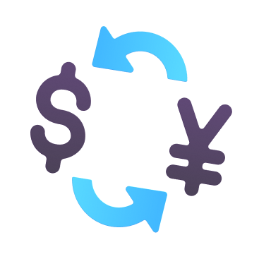

BERANDA
LAYANAN
AREA
KONTAK
Rangkai Karirmu Bersama
Conleanse
!
Lamar Kerja

Posisi Tersedia
Office Boy /
Office Girl
Tugas & Tanggung Jawab
Melakukan Pekerjaan Utama Sebagai Seorang OB (Office Boy) / OG (Office Girl)
Membersihkan Kawasan Yang Telah Dibagikan Serta Fasilitas Yang Ada Di Area Pembersihan
Memiliki Tanggung Jawab Atas Kebersihan Dan Kerapihan Lingkungan Wisata
Merawat Dan Menjaga Serta Melakukan Pengecekan Atas Keperluan Kawasan Wisata
Melaksanakan Serta Bertanggung Jawab Atas Tugas-Tugas Lain Yang Diberikan Pimpinan
Mempersiapkan dan Memenuhi Segala Kebutuhan Yang Diperlukan Oleh Manajer Proyek
Kualifikasi/Persyaratan:
Wanita/Pria
Lulusan Minimal SMP
Rajin, Cekatan, Rapi, Jujur, Bersih, Dan Bekerja Sama
Sehat Jasmani Dan Rohani
Keuntungan
26 Hari Kerja
Gaji Rp2.600.000
Training
Tugas & Tanggung Jawab
Menjadi Pengajar Atau Trainner Untuk Staff Kebersihan (OB)
Pengambilan Data Lapangan Dan Pengolahan Data Terkait Lingkungan
Bertanggung Jawab Atas Penyusunan Dokumen Lingkungan (UKL-UPL, SPPL, AMDAL, Pertek, Dll)
Merekrut, Mengedukasi, Mengontrol, Dan Mengawasi Kinerja Mitra Kerja
Melakukan Koordinasi Dan Pelaporan Rutin Terkait Progress Pekerjaan Yang Sedang Dijalankan
Berkoordinasi Dengan Instansi Terkait Dan Klien
Kualifikasi/Persyaratan
Pendidikan Minimal S1 Teknik Lingkungan/D4 Teknik Pengolahan Limbah
Pengalaman Minimal 2 (Dua) Tahun Pada Bidang Lingkungan Dan Limbah
Menguasai Perhitungan Dan Peraturan Pengolahan Limbah
Memahami Dan Pernah Menyusun Dokumen Lingkungan (UKL, UPL, AMDAL, Pertek,)
Paham Regulasi Lingkungan Hidup Dan Implementasinya
Memiliki Kemampuan Analisa Yang Baik
Teliti, Ulet, & Mampu Bekerja Dengan Target Dan Deadline
Keuntungan
26 Hari Kerja
Gaji Rp4.500.000